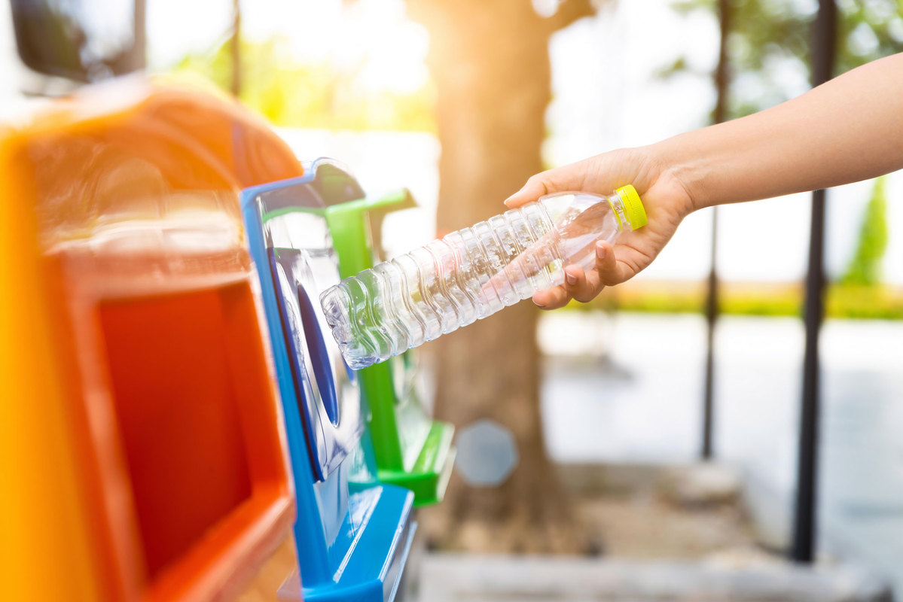

Пункти прийому
 Проект Велика Епоха розробили інтерактивну мапу пунктів прийому використаних батарейок, люмінесцентних ламп, градусників, макулатури, пластику, скла і навіть ганчір’я. Мета її створення - залучити мешканців мегаполісів роздільно збирати тверді побутові відходи та повертати їх у господарський обіг.
Інформацію про підприємства, які збирають вторсировину: пластик, поліетилен, шини, макулатуру, старі непотрібні речі, такі як одяг, взуття, сувеніри та іграшки – ентузіасти знайшли у відкритому доступі і розмістили її на мапі міста. Відтак, натиснувши на конкретний пункт, можна дізнатися адресу, телефон, час роботи та назву підприємства, яке займається цією діяльністю, розповідає Євген Довбуш, зауважуючи, що дані потребують уточнень.
Розширену мапу для усіх міст України можна також подивитися за посиланням:Куди здати відходи